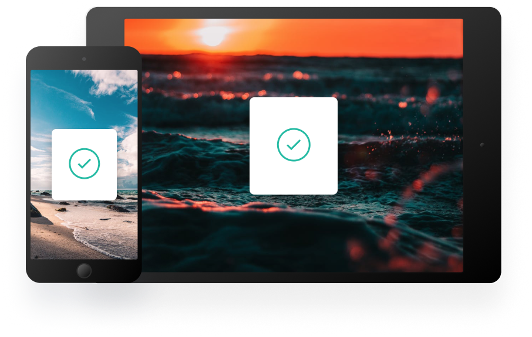
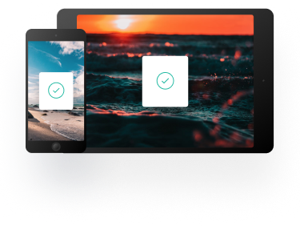

Kopyaladığınız her şeyin geçmişi
Pano, kopyaladığınız her şeyi takip etmenizi ve düzenlemenizi sağlar. Tüm cihazlarınızda panonuza anında erişin.
Parçacıklarınızı takip edin.
Pano, kopyaladığınız her öğeyi anında bulutta depolar, böylece tüm cihazlarınızdan kesitlerinize hemen erişebilirsiniz. Mac ve iOS uygulamalarımız her şeyi düzenlemenize yardımcı olur.
Hızlı Arama
İçerik, kategori, web adresi, uygulama ve daha fazlasına göre snippet'lerinizi kolayca arayın.
iCloud Senkronizasyonu
Tüm cihazlarınızda snippet'leri anında kaydeder ve senkronize eder.
Tam Tarihçe
Uygulamayı kullanmaya başladığınız ilk andan itibaren tüm snippet'leri geri alın.
Her Yerde Panoya Erişin
İster hareket halinde olun, ister bilgisayarınızın başında, birkaç basit tıklama ile tüm Pano parçacıklarınıza erişebilirsiniz.
 İş akışınızı güçlendirin
Verimliliğinizi artıracak araçlara sahibiz.
Kara listeler oluşturun
Belirli kaynakları hariç tutarak hassas bilgilerin panonuza asla ulaşmamasını sağlayın.
Düz metin parçacıkları
Tutarlı bir görünüm için kopyalanan metinden istenmeyen biçimlendirmeleri kaldırın.
Ön izleme
Kolay erişim için Panonuzdaki tüm snippet'lerin hızlı önizlemesi.
iOS ve Mac OS için Pano
App Store'da ücretsiz olarak mevcuttur. Mac veya iOS için indirin, iCloud ile senkronize edin ve panonuza eklemeye başlayabilirsiniz.
- FAQs
- Bize Ulaşın
- Gizlilik Politikası
- Basın Kiti
- Kurulum Kılavuzu